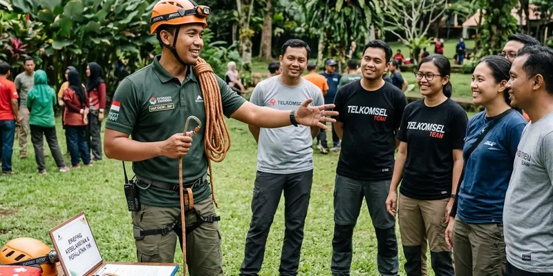

Vendor outbound rafting yang tepat perlu memiliki pengalaman menangani rombongan, kelengkapan alat keselamatan yang memadai, serta kejelasan paket harga sebelum kegiatan rafting Kaliwatu berlangsung.
Ringkasan Inti
- Pengalaman vendor dalam menangani rombongan menjadi indikator penting sebelum memilih jasa outbound.
- Kelengkapan alat keselamatan wajib diperiksa sebelum menggunakan jasa vendor tertentu.
- Kejelasan paket harga membantu menghindari biaya tambahan yang tidak terduga.
- Beberapa vendor seperti Gemilang Katon Outbound menawarkan paket rafting yang mencakup pemandu dan dokumentasi.
- Komunikasi kebutuhan acara sejak awal membantu vendor mempersiapkan kegiatan sesuai harapan peserta.
Bagaimana Cara Memilih Vendor Outbound yang Tepat untuk Rafting Kaliwatu?
Cara memilih vendor outbound yang tepat untuk rafting Kaliwatu adalah dengan mengevaluasi pengalaman vendor dalam menangani kegiatan serupa, memeriksa kelengkapan alat keselamatan yang disediakan, serta membandingkan cakupan paket dari beberapa penyedia jasa sebelum memutuskan.
Rombongan korporat maupun keluarga besar disarankan menanyakan rasio jumlah pemandu dengan peserta, karena rasio yang memadai turut memengaruhi tingkat pengawasan dan keselamatan selama kegiatan rafting berlangsung di sepanjang Sungai Brantas.
Apa yang Perlu Diperiksa dari Paket Outbound Rafting Sebelum Memesan?
Hal yang perlu diperiksa dari paket outbound rafting sebelum memesan meliputi cakupan layanan seperti pemandu, perlengkapan keselamatan, transportasi lokal, konsumsi, serta dokumentasi kegiatan yang biasanya menjadi bagian dari paket outbound rafting Kaliwatu.
Beberapa penyelenggara outbound seperti Gemilang Katon Outbound umumnya menawarkan paket yang telah mencakup elemen-elemen tersebut, namun peserta tetap disarankan menanyakan secara rinci detail setiap komponen paket agar tidak ada biaya tambahan yang muncul secara tiba-tiba saat kegiatan berlangsung.

Pemandu profesional yang mendampingi dan memastikan perlengkapan keselamatan tim selama outbound rafting.
Apa Pertanyaan Penting yang Perlu Diajukan Sebelum Menggunakan Jasa Vendor Outbound?
Pertanyaan penting yang perlu diajukan sebelum menggunakan jasa vendor outbound meliputi jumlah pemandu yang akan mendampingi, standar keselamatan yang diterapkan, serta kebijakan pembatalan atau penjadwalan ulang apabila terjadi kondisi cuaca buruk.
Pertanyaan lain yang juga penting diajukan:
- Apakah paket sudah mencakup asuransi kecelakaan bagi peserta rafting.
- Bagaimana prosedur darurat yang diterapkan vendor apabila terjadi insiden di sungai.
- Apakah tersedia opsi tambahan seperti dokumentasi foto atau video selama kegiatan.
Bagaimana Cara Menyampaikan Kebutuhan Acara kepada Vendor Outbound?
Cara menyampaikan kebutuhan acara kepada vendor outbound adalah dengan memberikan informasi jumlah peserta, tujuan kegiatan seperti team building atau rekreasi keluarga, serta preferensi tambahan seperti kebutuhan dokumentasi atau sesi games sebelum rafting dimulai.
Komunikasi yang jelas sejak awal membantu vendor menyiapkan tim pemandu dan perlengkapan yang sesuai dengan skala rombongan, sehingga kegiatan rafting Kaliwatu dapat berjalan lebih terorganisir tanpa kendala teknis yang seharusnya dapat diantisipasi sebelumnya.
Apa Kesalahan Umum saat Memilih Vendor Outbound untuk Rafting?
Kesalahan umum yang sering terjadi adalah hanya memilih vendor berdasarkan harga termurah tanpa memeriksa standar keselamatan dan pengalaman tim pemandu, sehingga berisiko mengurangi kenyamanan bahkan keselamatan peserta selama kegiatan berlangsung.
Kesalahan lain yang juga sering ditemui:
- Tidak menanyakan kejelasan cakupan paket sebelum melakukan pembayaran.
- Mengabaikan ulasan atau rekomendasi dari peserta yang pernah menggunakan jasa vendor tersebut sebelumnya.
- Tidak mengonfirmasi jadwal cadangan apabila terjadi perubahan cuaca mendadak.
Kesimpulan
Memilih vendor outbound yang tepat untuk rafting Kaliwatu membutuhkan evaluasi pengalaman, standar keselamatan, dan kejelasan paket layanan seperti yang umumnya ditawarkan oleh penyelenggara seperti Gemilang Katon Outbound. Komunikasi kebutuhan acara sejak awal dan pengecekan detail paket akan membantu kegiatan outbound rafting berjalan lebih aman, terorganisir, dan berkesan bagi seluruh peserta.
Pertanyaan yang Sering Diajukan
Perlu diperiksa pengalaman vendor, kelengkapan alat keselamatan, serta kejelasan cakupan paket sebelum melakukan pemesanan.
Sebagian vendor seperti Gemilang Katon Outbound umumnya sudah mencakup pemandu dan dokumentasi dalam paket outbound rafting yang ditawarkan.
Risikonya adalah standar keselamatan dan pengalaman tim pemandu yang belum tentu sebanding dengan harga murah yang ditawarkan, sehingga dapat memengaruhi kenyamanan dan keselamatan peserta.